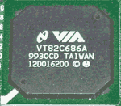

|
|
| 当前位置：电脑报电子版 > 1999 年 > 45 期 > 评测与市场 > 挑战i820的威盛AGP 4×主板 |
| 《 挑战i820的威盛AGP 4×主板 》 |
| 作为有亚洲INTEL之称威盛在推出VIA Apollo Pro 133芯片组之后，引起了市场的广泛重视。然而仅仅只是对DMA 66,133MHz总线的支持仍然引不起市场的积极反应。为什么?一个很大的缺憾就是Apollo Pro 133不支持AGP 4×,这点遗憾让广大DIY们,特别是发烧级玩家心动却没行动。站在DIY前沿的本报评测室一直关注威盛的下一步动作。果然不负众望,VIA的努力得到了最好的回报,Apollo Pro 133A正式面世。这款Apollo Pro 133A在Apollo Pro 133的基础上,进一步支持了AGP 4×,成为可以和i820较劲的强力对手。为了抢先得到 PRO 133A的产品,我们四方奔走,终于得到了磐英的6VBA2主板,国内第一款上市的Apollo Pro 133A主板。作为和威盛合作紧密的磐英,在众多主板商中一直在兢兢业业做威盛芯片主板。
一、外观印象 磐英主板和市场上其它主板的外观不一样，它采用绿色板基，而其它主板采用金色的为多。磐英6VBA2主板使用的各类插槽和接口都是名牌OEM的，各个端口以颜色区分,符合PC 99规范；有3个DIMM支持最高为768MB的内存。采用ATX——Slot1结构，提供三条DIMM、5个PCI、AGP插槽和1条AMR槽、2个USB接口，主板上还集成了AC97声卡。二、技术特色 Apollo Pro 133A的南北桥  Apollo Pro133A的北桥－VT82C694X支持1/2 AGP 时钟，异步的133MHz总线/内存时脉工作方式，可以使PC100的内存工作于133MHz下。在内存支持方面，694X跟693A一样，同样支持SDRAM,
HSDRAM以及Virtual Channel SDRAM（虚拟通道）。它的读写缓冲/内存的时序跟693A一样。支持AGP 4×，这使它的管脚数目从492
脚增加到510 脚。 AGP 4×接口 由于采用了694X芯片，使得6VBA2能够很顺利地支持AGP 4×。它最大的不同点是板上的AGP插槽，AGP 4×插槽中间没有隔断(图5、图6)。 与AGP 2×相比，AGP 4×不仅使显卡的数据传输率提高了一倍，由原来的533MB/s提升到1.066GB/s，而且它的工作频率也提高到266MHz，这样就明显地提高了AGP 4×显卡的性能。目前市场上已经有很多采用AGP 4×/2×万用插脚显卡如TNT2、G400及Savage4的显卡，EP－6VBA2的出现能够让他们充分发挥AGP4× 的功能。即将上市的GeForce 256芯片组的显卡已经支持AGP 4× 特有的快写功能(Fast Write)。EpoX 在主机板上全面采用了专有的Super2 AGP 技术, 单独对AGP供电，可提供高达20A的电流，充分满足了GeForce256/ TNT2 Ultra 这样的耗电大户的需求，不会出现因为AGP供电不足产生死机、不稳定（在3D游戏中死机）的现象。它的AGP电流量在BIOS内让用户设定，可让用户Enable或Diable AGP 4×模式，和一个可控制AGP电流多少的设定调校，由00到FF共256个级别。一些TNT2卡需要较大的电流量，而Savage的卡则需要较少的电流量，如果设定太大的电流量给与小需求的显示卡时，Crosstalk的情况便会发生，即是卡内的讯号会互相干扰，令显示卡死机。相反地供应太少的电流给与多用量的显示卡时，亦会导致它运作不稳，这项功能的确是非常体贴DIY玩家们。 三、测试 为了了解VIA AGP4×主板的整体性能和稳定度，我们精心设计了测试方案。这次测试的平台采用Intel Pentium Ⅲ 600MHz版本，测试中分别工作在100MHz外频和133MHz外频，CPU核心电压为2.05V，比通常的Pentium II/Ⅲ CPU要高0.05V，这是Intel为了增加CPU在600MHz下的稳定性而提高的。测试硬盘是IBM DJNA－371350 13.5GB，7200转。内存为小影霸PC133 SDRAM，显卡使用的是小影霸TNT2 2500 3D加速卡（核心/内存频率为135MHz/166MHz)，TNT2 2.40版驱动程序。测试软件环境为：英文版本Win98SE Ver 2222A。四、兼容性和稳定性 由于每次安装系统都要安装VIA自己的驱动程序和补丁，很多读者都认为VIA芯片的主板在兼容性上和稳定性不如Inetl 440BX系列。兼容性和稳定性能不能得到保障，是很多读者关心的问题。在非Intel芯片组的主板上安装Win98通常都有不少麻烦，但在测试中，我们安装了VIA最新发布的VIA 4.16版多合一驱动程序，过程非常顺利，一次安装就完成了，没有遇到任何麻烦，说明VIA的驱动程序也已经做得相当完善了。接下来，我们作了长达72小时的3D游戏热机测试，也没发生任何异常情况，VIA 694X芯片组的温度并不高，而且根本没有装散热片，在稳定性上VIA 694X相当优秀。在兼容性方面，我们测试了一些流行配件的搭配，也没有发生不兼容的现象。特别指出，我们在测试另一块先送到的6VBA2工程样品中，一些AGP 4×显卡无法工作的情况已经在正式版中得到解决，完全能够正常使用。就目前的情况来看， VIA 694X的兼容性比前代产品有一定提高。 由于南桥686A集成了AC97声卡，我们同时测试了其兼容性。最新的1.07版本声卡提供了Win 95、Win 98 WDM、Win98 SE、NT、Win 2K、DOS的驱动程序，除CPU占用率略高外，表现都很不错。特别是DOS的兼容性相当不错，整体表现优于810主板集成的AC97声卡。 五、性能测试 在这次测试中，由于使用的是Intel Pentium Ⅲ 600MHz测试版本，我们可以任意的设置CPU频率，也就是说同时进行了超频测试。在磐英6VBA2主板的BIOS中，可以自由的设置CPU频率以及内存的工作频率，我们测试的时候分别采用KingMax的128M PC133内存和小影霸的64M PC133内存进行测试，在将一颗未锁频的CPU超频到150MHz外频的时候，将内存的工作频率也一样设置到150MHz(CL=3)下工作，都能够正常的进入到Windows 98中，说明6VBA2的超频性能确实比较出色。6VBA2在内存频率设置方面比较灵活，在BIOS中可以设定内存为CPU频率＋33MHz模式或CPU频率－33MHz模式。即使使用66MHz外频的CPU时，也可以将内存的工作频率设置为＋33MHz模式=100MHz。甚至在CPU跑100MHz以上时，可以设置出超过133MHz的频率，这当然得视内存的质量而定。特别是在目前PC133内存非常流行的时候，普通用户使用Intel的赛扬处理器外频是100MHz，但如果配合PC133内存的话，一样可以享受到133MHz内存频率的性能快感。 从测试数据中看，磐英6VBA2的成绩相当不错，特别是133MHz×4.5倍频的确要比100MHz×6要快，表现在内存密集型软件中更为突出。 对比36期“AMD K7－600MHz测试中，PⅢ600MHz的成绩可以说相当接近(本次测试的3D卡和硬盘要差不少)，而且在跑133MHz时，440BX的AGP的频率为88MHz，6VBA2 (VIA 694X) 仅为66MHz，这就是为什么在大多数133MHz测试中，威盛芯片组主板和440BX有较大的差异的主因。 测试中我们发现，虽然目前很多有AGP 4×万能插脚的TNT2都号称支持AGP 4×，但在6VBA2上透过PowerStrip软件察看，其并没有支持到这项功能。也许需要升级显卡BIOS才能真正实现它。 六、小结 虽然和目前的440BX 相比，VIA 694X 仍然有少许差距，和上一代产品相比则进步明显。但Inetl 440BX 毕竟是一年半以前的旧产品了，行将被Intel淘汰，目前流行的AGP 4×、ATA66、PC133等规格均不支持，而且在ATA66的硬盘上存在兼容性问题(必须将硬盘设定在ATA33模式)。磐英EP－6VBA2 AGP4×主板对流行规格的完整支持，使得它的竞争能力非常强。和Intel 即将推出的i820相比，VIA 694X在整体性能上可以说旗鼓相当，各有长处。目前的市场价格看来VIA 694X ＋ PC133 SDRAM 比i820＋ RAMBUS明显便宜太多。由于i820还没有正式推出，我们不能对它的性能做出正确评估，但目前收到的测试样品看来，600MHz (4.5×133MHz)频率下的最佳整体性能由440BX主板夺得，VIA 694X紧随其后，差异相当小，而i820排最后。不过在内存密集性应用中，i820的RAMBUS 发挥出作用，排在第一位。
可以肯定磐英EP－6VBA2 采用的VIA 694X芯片将成为市场主流之一，喜欢尝鲜的读者不妨一试这张主板。 |
| 下载本期推荐软件 | 页 首 |
| 《电脑报》版权所有，电脑报网站编辑部设计制作发布 |